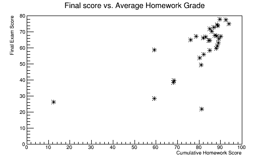
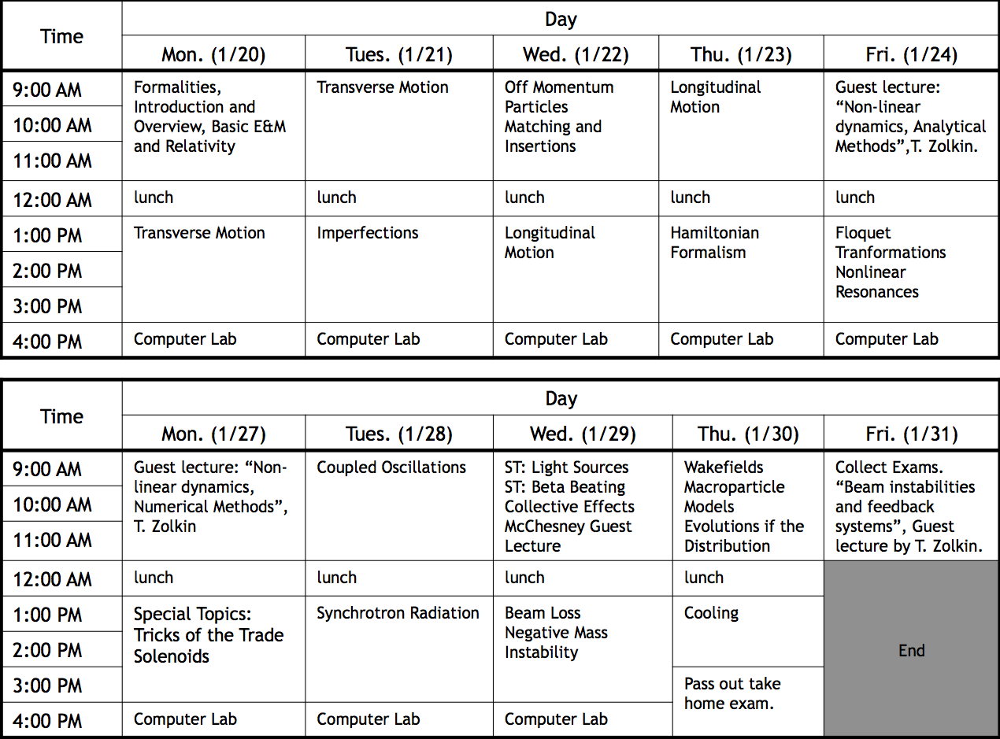

USPAS Accelerator Physics Course
January 20-31, 2014, Knoxville, TN
Announcements Concerning the Final
- Final with solutions posted here.
- Statistics for the final exam and final scores ("audit" students omitted)

Contents
General

Course personnel:
Text and Background Material
The primary text for the course is Syphers and Edwards "An Introduction to the Physics of High Energy Accelerators", which will be provided for the students.
Some good background for the Hamiltonian treatment of accelerators can be found in the paper "Single Particle Dynamics in Circular Accelerators" by Donald Ruth, which is available online.
Final from 2012 with solutions.
Lectures
Guest Lectures
Special Topics
Labs
The labs for this course were primarily computer simulations done usinging the Portable Beamline Optics (PBO) software package, written and sold by AccelSoft, Inc, with the TRANSPORT simulation module. In addition, some exercises used the MAD optics modeling program, which is available free of charge.
Lab materials:
Homework and Final
(last modified February 7, 2014 by Eric Prebys)